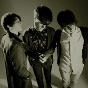

A Question Of Sound #5: Digesting Those 2009 Tips
It's become almost compulsory for a music publication to follow up its end of year retrospective with a list of tips for the New Year. For many critics it's not enough to predict the next big thing any more; it's all about who gets there first. I'm not too keen on taking part in this particular contest, though, for two main reasons: 1) I really couldn't care less which artists achieve commercial success in 2009; 2) I wouldn't exactly call myself an expert on tiny, up and coming bands; it's hard enough just trying to keep up these days.
So, I'm going to approach this a little differently. The plan is to pick ten names, at random, from other people's lists. I'll then determine the chances of the artist in question earning a positive write-up from No Ripcord because, let's face it, a few kind words on the virtual pages of this website is the elusive dream that each and every one of these young hopefuls is chasing. Who wants Brit Awards and Grammys cluttering up their mantelpieces?
. . .
Hatcham Social
Championed by Alan McGee
http://www.myspace.com/hatchamsocial
He says: “Hatcham Social look where inspiration can always be found – Scotland. The members of Hatcham Social are the Orange Juice of the noughties.”
Hmmm, I thought the Franz Ferdinand guys were the Orange Juice (impersonators) of the noughties? And isn't this decade almost over, anyway? Nevertheless, these Londoners have perfected a pretty reasonable approximation of the Orange Juice sound. The rhythm section is appropriately jaunty, the guitar riffs suitably angular – it's not bad at all. As long as they steer clear of Mr McGee they might be on course for a respectable 7/10 (good tunes, influences on their sleeves, blah blah). Watch this space.
La Roux
Championed by BBC Sound Of 2009
http://www.myspace.com/larouxuk
They say: “Another hot new name on the electro-pop block, singer Elly Jackson and synth player Ben Langmaid are La Roux, creating playful, modern tunes informed by the likes of Prince and David Bowie.”
A deal with Polydor, a glossy MySpace page, a Lily Allen support slot – we're probably going to be hearing a fair bit of La Roux in 2009. Quicksand is a highly polished electro-pop tune, a bit like The Knife for kiddies. It's not terrible although I think the marketplace is going to be flooded with tunes built around the female-vocal-plus-polished-electro-backing-track formula in 2009. With major label backing and a big promo campaign, La Roux should be successful, but their success is by no means guaranteed. The three tracks on MySpace don't display a great deal of diversity and I suspect the duo's début album will be somewhat less thrilling than the thirty second burst that will inevitably turn up on an Apple ad. I predict a middling 5/10.
Empire Of The Sun
Championed by Conor McNicholas (Editor, NME)
http://www.myspace.com/empireofthesunsound
He says: “I hated Empire of the Sun at first. It sounded over-played, over-produced and over-thought. But relentless spins on the NME stereo has made me fall for their lush '80s sound. The tracks throb and glow. Will be one of the albums of the year, no doubt.”
With well over 3 million MySpace plays and a moderately successful 2008 album under their belts, it could be said that the Australian electro-poppers Empire Of The Sun are already too established to feature on a list like this. I admire NME's commitment to continuity, though: its writers hyped up Luke Steele's dismal band the Sleepy Jackson earlier in the decade and now Mr McNicholas has cursed Steele's latest project by handing it a tag it will never be able to live up to – Walking on a Dream wasn't even one of the albums of last year. The title track is pretty awesome, though, so let's say 6/10 and move on.
White Lies
Championed by HMV
http://www.myspace.com/whitelies
They say: Nothing in particular.
Another one those bands in gloomy black outfits who invite comparisons to Echo and the Bunnymen, the Teardrop Explodes, Joy Division and Interpol (who have joined the influences lists now, by virtue of age and relative longevity). Thirty seconds into To Lose My Life, however, it's clear that White Lies are already ten times better than Editors; as the precise percussion and atmospheric guitars give way to the song's soaring chorus, it becomes apparent that we might have a half-decent British indie band on our hands, albeit it one with stadium aspirations. I predict a slightly overreaching début packed full of anthems for teenage boys: 7/10.
The Big Pink
Championed by Alex Miller, VICE Magazine
http://www.myspace.com/musicfromthebigpink
He says: “They're the dark underbelly of the top London scene. There's an obvious Velvet Underground obsession that sounds really cruel and horrible but with a soulful subtlety. They're going to be both the big art-school success of the year and the critics' choice.”
Despite taking their name from one of the most famous American albums of the sixties, London's the Big Pink couldn't sound more British... unless, of course, they started performing Chas & Dave covers, but that would just be silly. I can't hear any evidence of a Velvet Underground obsession at all, to be honest; much more obvious to my ears is an interest in the psychedelic sounds of the late eighties/early nineties, and a particular fondness for Spacemen 3. Tooyoungtolove, in particular, seems indebted to this era of music. A more contemporary comparison would have to be Secret Machines, who the band is set to team up with in February for an NME show. It's a good fit. I expect a good critical reception to the band's début. Another 7/10.
Little Boots
Championed by MTV
http://www.myspace.com/littlebootsmusic
They say: “When MTV.co.uk filmed a Spanking New Session with Little Boots last October she proved she has the potential to become a major talent. She's now set to release one of the most anticipated UK debut albums for a long time, packed with her trademark electro-driven pop smashes.”
Blackpool-born Victoria Hesketh, who performs as Little Boots, is arguably the most interesting 'pop' artist on the various tip lists. The fact that her name appears on practically every 2009 tip sheet says a lot about her chances of commercial success, too. You'll have probably heard her Joe Goddard (Hot Chip) produced single Stuck On Repeat already; it did the rounds on the blogs back in the early months of 2008, and justifiably so. Potentially an 8/10. My favourite so far.
MC Rut
Championed by Music Week
http://www.myspace.com/middleclassrut
They say: “Championed very early by Zane Lowe on Radio One, MC Rut are leading the return of tough, guitar-driven rock songs in 2009. Every note is underpinned with a stadium-filling, fists-in-the-air attitude that will cut the pretenders down to size. MC Rut are tough rock music with the commercial sensibility of Linkin Park. Look out.”
Is there a Jane's Addiction sized hole in your life? In the unlikely event that there is, this Sacramento band could be the ideal solution. Fans of arena-filling alt-rock could do a lot worse than listen to this and I'm sure the folks that make those Guitar Hero games are very interested. I quite happily can live without this kind of sound in my life, though, and as Jane's Addiction seem to keep reuniting anyway I'm awarding it a distinctly average 5/10.
VV Brown
Championed by The Independent
http://www.myspace.com/vvbrown
They say: “On paper, 24-year-old VV Brown certainly has the makings of a star – beauty, a big voice and, crucially, the backing of a major record label. Add to that her penchant for retro-soul and success on a huge scale seems a foregone conclusion.”
Another ubiquitous name on this year's UK tip lists is that of VV Brown. A 24-year-old female singer-songwriter, Brown – like fellow 2009 hopefuls Little Boots and Empire Of The Sun – is making her second assault on the music industry. She has a wealth of songwriting experience, having penned hits for artists like Sugababes and Pussycat Dolls, and her current sound, a quirky, soulful take on classic doo-wop and sixties pop, is just about different enough to set her apart from the likes of Duffy, Amy Winehouse and Adele. I prefer Little Boots, but wouldn't bet against VV Brown releasing a respectable début later in the Spring. 6/10.
Grammatics
Championed by Rob Webb, Drownedinsound.com
http://www.myspace.com/grammatics
He said: “Okay, so they might have been one of our tips for last year as well but the best things take time to come to fruition, which is certainly the case with Grammatics' debut album . . . This is shaping up to be one of the debuts of the New Year.”
Musically, Grammatics seem to be pushing all the right buttons – the tunes are interesting, they have a cellist, they're clearly not just aping their heroes and seem to genuinely care about their music – but I just can't stand Owen Brinley's vocals. It's not because the pitch is high; they just don't seem to work alongside his band's (admittedly excellent) music. I appreciate that some listeners might consider this very awkwardness an integral part of the band's charm; for me, however, it just doesn't work. 4/10 (unless they go instrumental).
Telepathe
Championed by John Kennedy, XFM
http://www.myspace.com/telepathe
He said: “Telepathe are two girls from Brooklyn who I saw and thought were amazing. They've divided people a lot because they're a couple of young girls, and when they first played they were just using a laptop and singing over the beats. Now they use a drummer, and they've evolved from being an improvisational, Animal Collective kind of band to using hip-hop beats with ethereal, washy sounds on top of melodies and strong female harmonies. I think they have the hooks to cross over massively, but they're still quite experimental.”
Another name that's been popping up on various blogs for a while now, Telepathe are set to release their début album early in 2009. It's produced by TVOTR's David Sitek, which should guarantee a few extra press inches, and if the tracks on MySpace (especially the delightful Chrome's On It) are anything to go by, it should be a treat. I'm going to stick my neck and say 8/10. Now watch them prove me wrong with an absolute disaster!
. . .
FIVE QUICK PICKS FROM A QUESTION OF SOUND:
Girls
http://www.myspace.com/girlssanfran
If San Francisco's Girls can maintain the quality of the phenomenal Hellhole Ratrace over the course of an entire album then we're in a real treat later in the year. One of the best new indie bands I've heard in years.
Copy Haho
http://www.myspace.com/copyhaho
Isolation doesn't always breed creativity, but Stonehaven's Copy Haho (it's near Aberdeen) prove that living a million miles away from London, Manchester, and even Glasgow, can be a genuine advantage. One of Scotland's brightest new bands.
Klak Tik
http://www.myspace.com/klaktik
I have a competing interest of sorts to declare here, having released an MP3 EP by Danish singer-songwriter Søren Bonke late in 2008. I did that because I believed in his music a great deal, and I still do. Since the EP ignited the blogosphere (not really, but it should have), Søren has acquired a band of musicians to take his tunes to the masses and I wish him the best of luck. Get behind this great artist.
First Aid Kit
http://www.myspace.com/thisisfirstaidkit
While these young sisters from Sweden shot to fame with a great YouTube cover of Fleet Foxes' Tiger Mountain Peasant Song, their own music is just as good. Reminds me of fellow Swedes Taxi, Taxi!
Thousand & Bramier
http://www.myspace.com/thousandbramier
I just reviewed this duo's latest album but they remain relative unknowns outside their native France so I thought it was worth reminding you once again of their brilliance. Check them out!